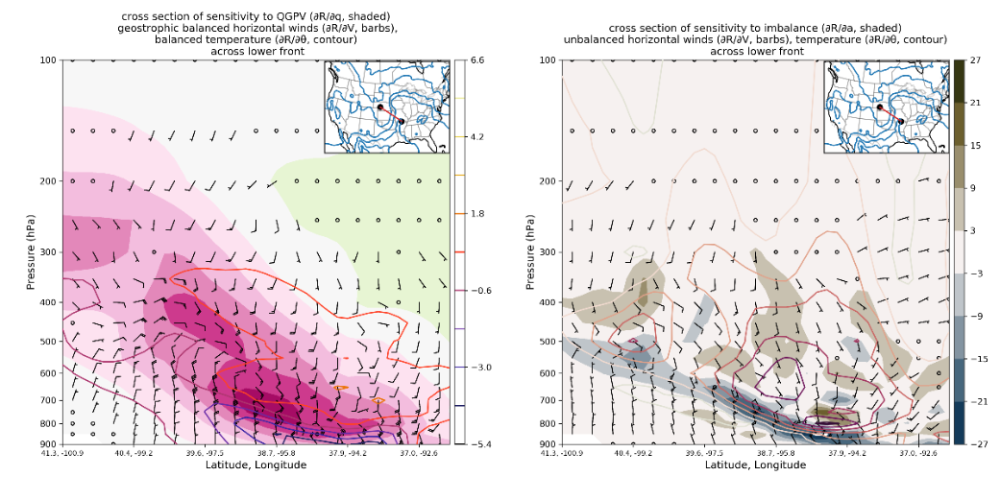
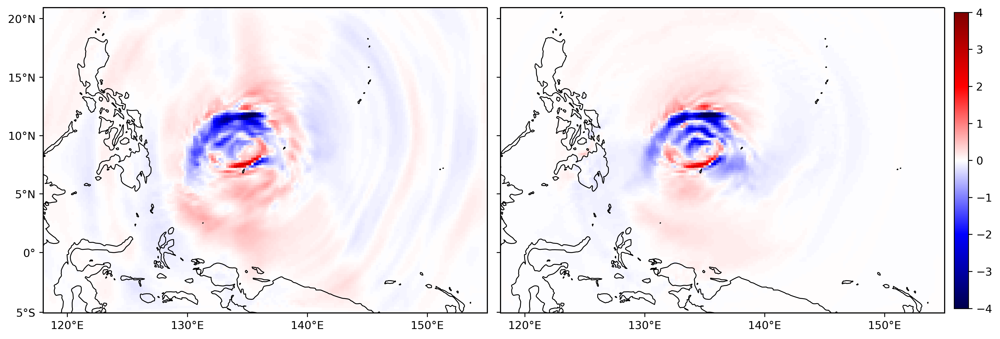
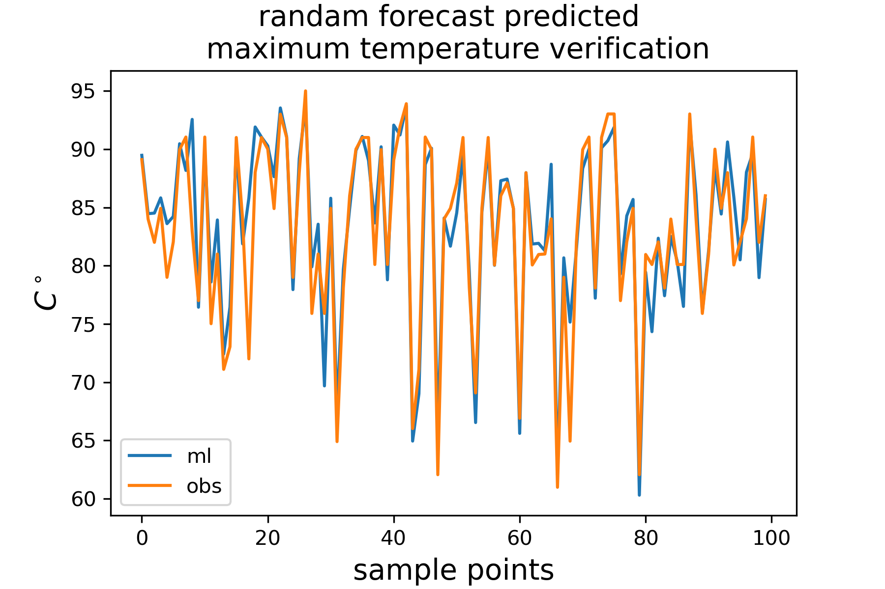

Research
My research spans atmospheric dynamics, predictability, and data assimilation. I combine global climate modeling (CESM2), regional modeling (WRF), and data assimilation (DART) to investigate polar cyclones, tropopause polar vortices, and tropical boundary layers.
Summertime Arctic Cyclone & Sea Ice Coupling
Summertime Arctic Cyclones (ACs) interact dynamically with Tropopause Polar Vortices (TPVs) and underlying sea ice. Using the Community Earth System Model version 2 (CESM2) and Observation System Simulation Experiments (OSSEs), this research investigates how coupled atmosphere-ocean-ice feedback processes modulate AC intensity and forecast error growth.
Pangu-DART Interface for Data Assimilation with Machine Learning NWP
Ensemble Data Assimilation systems are capable of integrating observations into any forecast model. To test this with AI models, I developed a native interface between the machine learning weather model Pangu-Weather and NCAR's Data Assimilation Research Testbed (DART). This allows ML-based ensemble forecasts to ingest real-time observations dynamically, combining machine learning efficiency with rigorous data assimilation.
Potential Vorticity (PV) Adjoint Sensitivity & Wave Filtering
Standard adjoint sensitivities to individual variables (wind and temperature) can trigger unphysical gravity wave noise in WRF backward integrations. By inverting geostrophically balanced sensitivity gradients using Quasi-Geostrophic Potential Vorticity (QGPV), the gravity wave patterns can be effectively filtered out. This provides clearer dynamical insights under "PV thinking" frameworks.

Figure 1: Ageostrophic frontal imbalance patterns captured via adjoint sensitivity analysis in a simulated frontal zone.

Figure 2: Adjoint sensitivity fields before and after applying geostrophically balanced QGPV initialization, showing the removal of boundary-reflecting gravity waves.
Statistical MOS Post-Processing for WxChallenge
A side project using a 10-year observation history to correct prediction tails of the GFS Model Output Statistics (MOS). This system is tailored for the national WxChallenge competition, refining daily predictions of temperature extremes, precipitation, and wind speeds.

Figure 3: GFS MOS prediction error distribution tail-corrections compared against true observation outcomes.
Feature Publication
Atmospheric Research · 2021
On the distribution of helicity in the tropical cyclone boundary layer from dropsonde composites